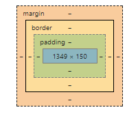

links
specaficity games on the Div in the css page:
This Is just a div, that we play with it's colers by changing its css rules.
Specificity
- Css3 Cheat Sheet print and lern before you sleep
- Specificity MDN
-

this image shows that the order of the elements in the style section, is orgenized by the specificity order
(or be like Nir, he never sleeps).
Box Model
the defoult option content-box OR border box ?
border box element (it's also a link to MDN box sizing)
- CSS Reset explanation on reset
- Normelize.css expalnation about Normelize Css
- Margin collapse When does it happen ? (intetrview question-must read ! )
-  blue -is the content.
where is the univarsol selector ?
what is the defoult border box or border content ?
Home Work
- Do the Specaficity Questions, located in lesson 11 folder
- Keegen Spes calc
- Khanacadamy Quiz
there are 2 links to do. and some css rules that you need to understand which one wins